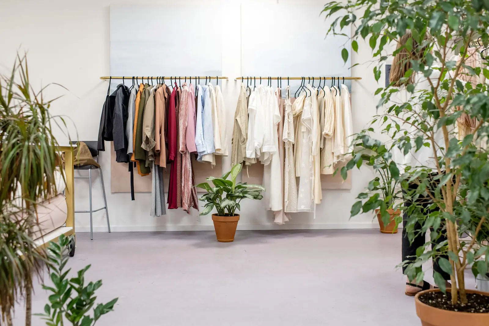
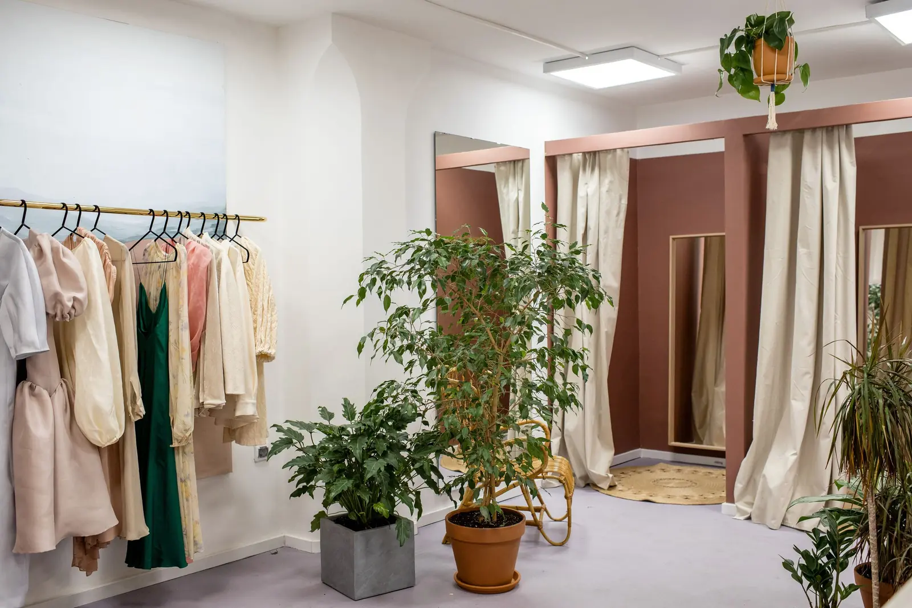
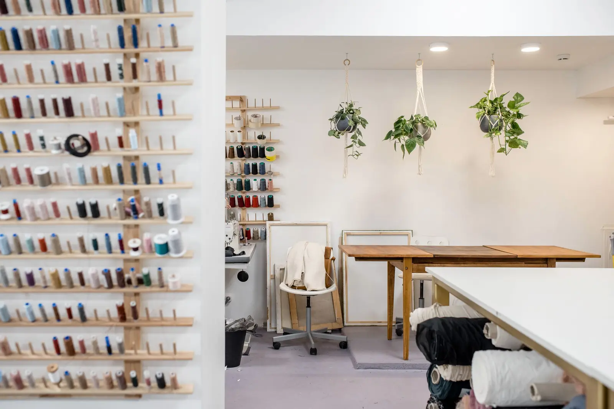
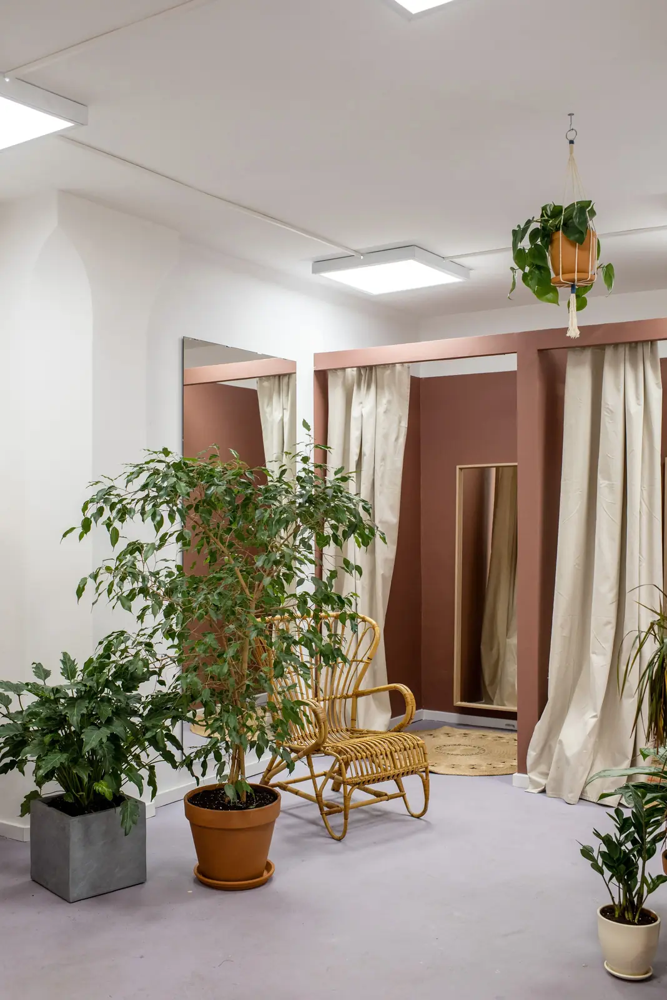
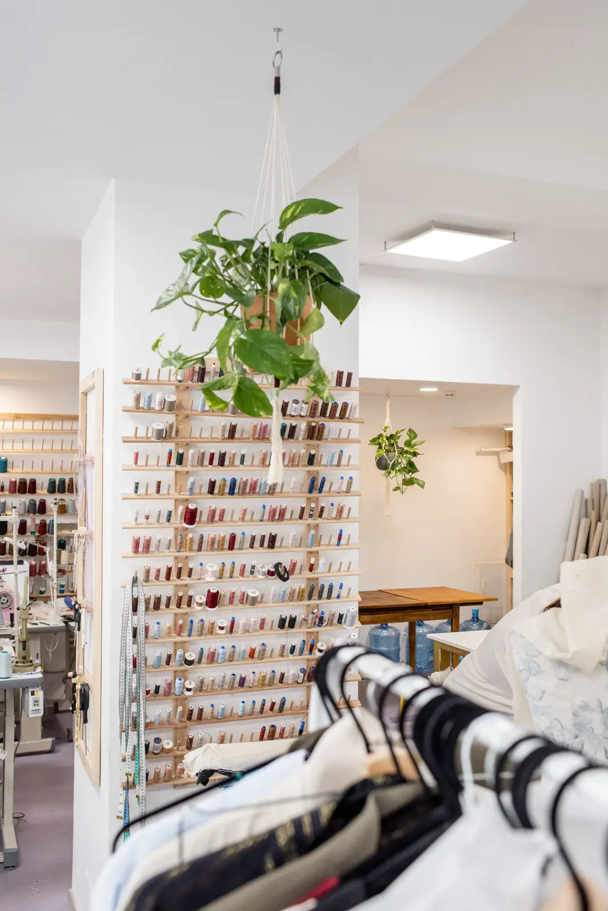
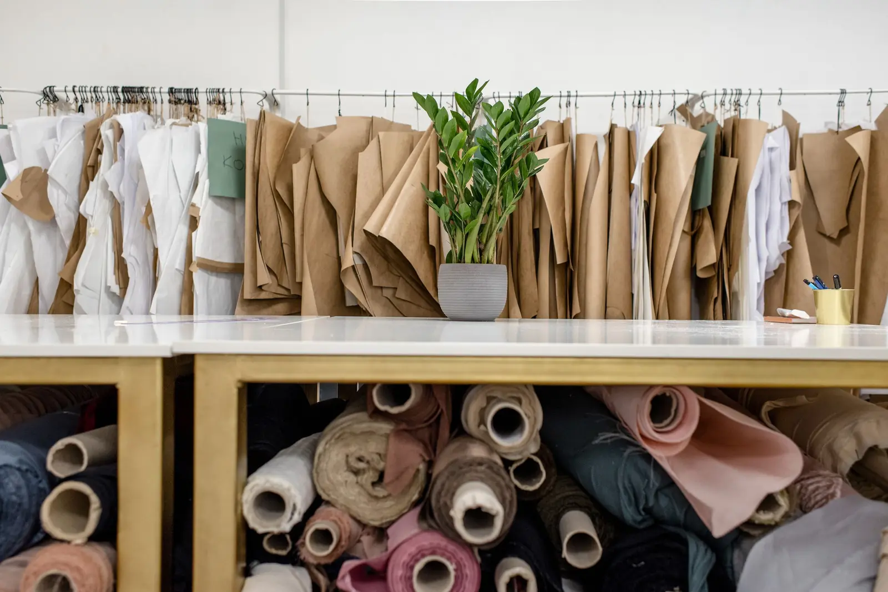
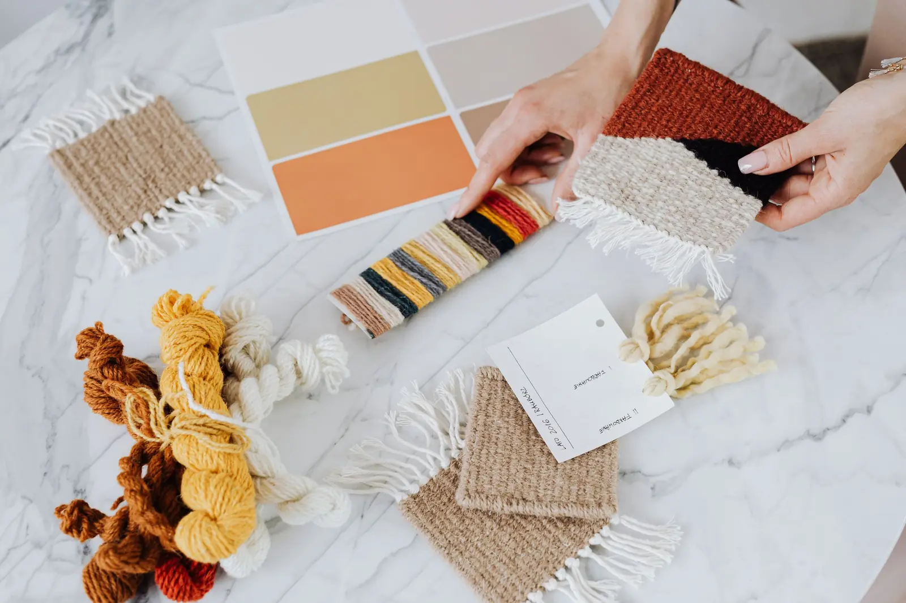
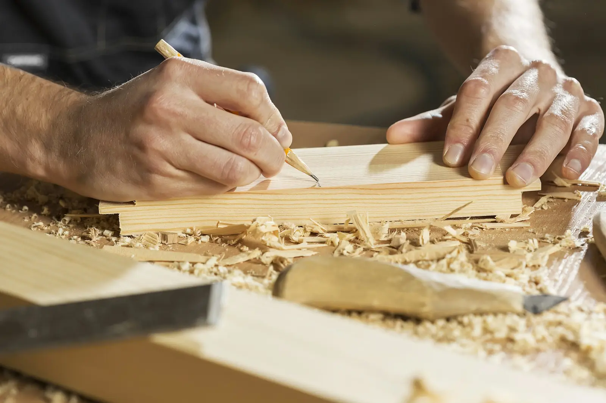
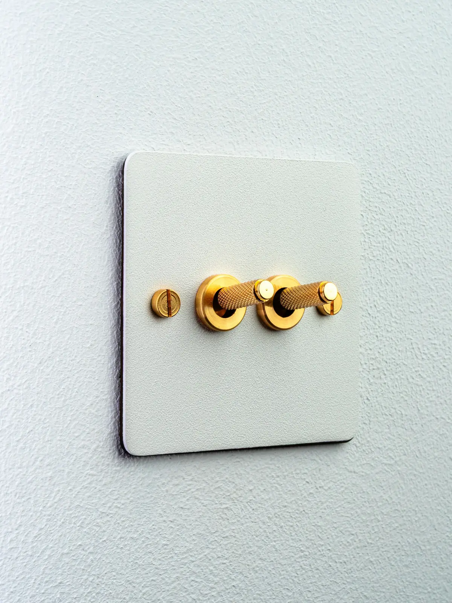

Dhaaga
Placeholder project. The name, quote and photographs stand in for real work.
A Jaipur block-printing house’s first store outside India, with the stock hung overhead like cloth drying in a dyer’s yard.
- Location
- Alserkal Avenue, Dubai, UAE
- Type
- Textile & homeware store
- Size
- 210 m² · 7-metre ceiling
- Scope
- Concept · Interior design · Fixtures · Lighting · Signage · Build · Roll-out kit
- Duration
- 7 months, brief to opening · 12 days installing on site
- Opened
- October 2025
The brief
A family block-printing house from Jaipur wanted its first store abroad to feel like the workshop, not a showroom: cloth you can touch, prints you can watch being cut. The unit was a bare warehouse with a 7-metre ceiling and no daylight.
The move
Hang the cloth like it’s drying.
Lengths of fabric run on ceiling rails five metres up and come down on counterweights to be handled and cut. The ceiling is the stock, and it changes every time a new print arrives.
What we did
- Concept
- Interior design
- Lighting
- Signage
- Build
- Fixtures
- Roll-out kit


FilmPlaceholder stock footage



The details



-
01Rails
Blackened-steel rails and counterweights, each carrying a 12-metre bolt of cloth, lowered by one person with one hand.
-
02Till
A 6-metre cutting table in solid sheesham doubles as the till, with a brass rule inlaid along its edge.
-
03Light
3,500 K throughout at CRI 97 or higher, so indigo still looks like indigo when you get it home.
The build
Every fixture was made in India, flat-packed into two containers and installed in 12 days by our site team, with a Dubai-licensed contractor for the electrics and fire systems. Each rail was load-tested before the first bolt of cloth went up.
The outcome
Customers stay long enough to have fabric cut to order, and the cutting table is busy most afternoons.
The fixtures are now documented as a kit of parts for the brand’s next two stores.
In their words
“Our customers touch everything. For the first time, we want them to.”
Credits
- Photography
- Placeholder stock photography
- Design & build
- Two Squares
- With
- Local contractor: [Contractor] · Rigging engineer: [Consultant]
Opening something like this?
Send us the floor plan and the opening date. We’ll come back with how the room could work.